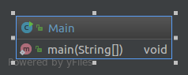
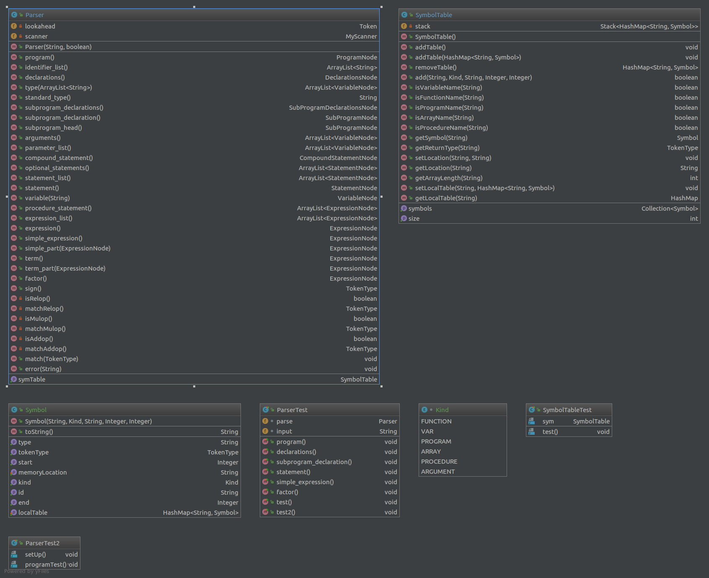
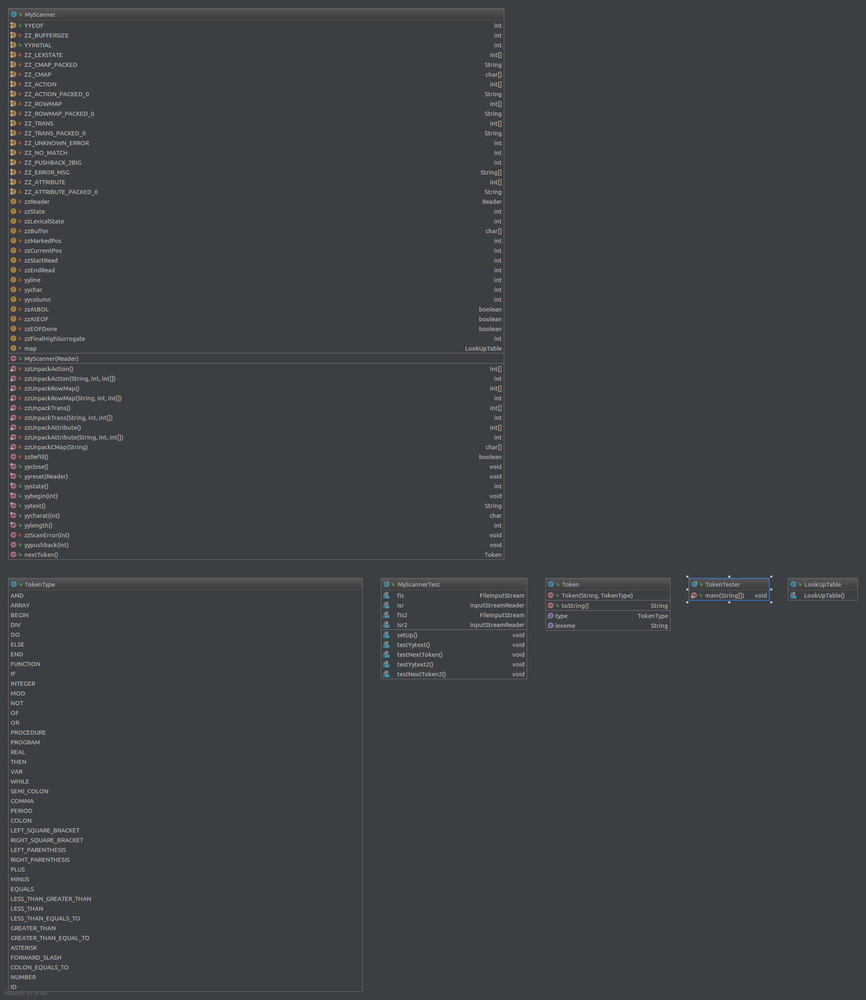
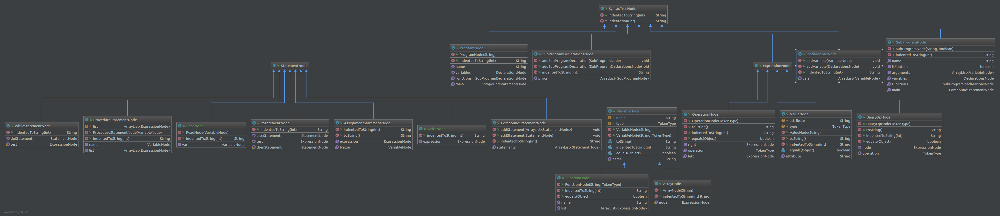
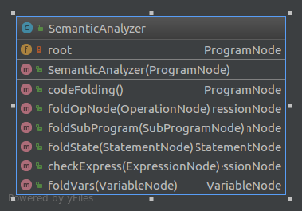
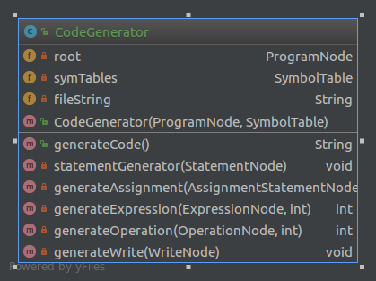

Compiler
Overview
This compiler takes in a Mini Pascal file and outputs a MIPS Assembly file. It converts the Mini Pascal code into MIPS Assembly.
We used JFlex to create our scanner and a lookup table to create the TokenTypes for each word passed into the program. The parser
uses recursion to match all of the proper TokenTypes to each word passed in. The SymbolTable contains Symbols that hold the different
IDs, VARs, PROGRAMs, ARRAYs, and FUNCTIONs. When they are suppose to show up in the parser, they are added to the SymbolTable. If
a duplicate shows up, it prints an error and exits. While scanning the Pascal file, it creates different nodes for each of the
different keywords in Pascal. It creates a tree of nodes that hold all of the information needed to make the Assembly file.
After the program identifies all of the Pascal's programs, subprograms, declared variables, and the program's main, it will start
to build the Assembly file based on the tree generated while reading through the Pascal file. When it is done creating the
Assembly file, it saves it to a file in the same location.
Design
CompilerMain

Parser

Scanner

SyntaxTree

SemanticAnalysis

CodeGeneration

Change Log
10 January 2017
- Imported MyScanner from another repo
20 January 2017
31 January 2017
2 February 2017
- Added error statements to methods without lambdas and filled in more methods
- Added Comments to Parser.java
3 February 2017
- Added comments to all other files
- Added ReadMe.md
- Added Software Design Document.html
- Added diagram.jpg
4 February 2017
9 February 2017
- Added SymbolTable.java that contains a Symbol class
11 February 2017
- Added SymbolTableTest.java
18 February 2017
- Integrated SymbolTable in Parser
- Updated SymbolTableTest
7 March 2017
- Started SyntaxTree integration into Parser
15 March 2017
- Added new nodes to the SyntaxTree
- Updated Parser
- Added ArrayNode to the SyntaxTree
25 March 2017
15 April 2017
- Added Code Folding
- Finished Parser
- Updated Software Design Document
23 April 2017
- Added Code Generation
- Added Compiler.jar
- Added Function, Read, and Write nodes to the Syntax Tree
- Updated Symbol Table to handle multiple HashMaps
- Updated Software Design Document
- Updated JavaDocs
- Organized files